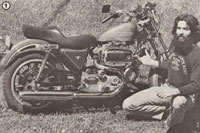
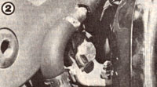
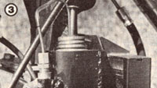

Here's how one of MOTHER's alcohol fuel seminar instructors turned his Harley-Davidson motorcycle into a ...
When one balances the "convenience" of owning an automobile against today's high fuel prices and-in urban areas-limited available parking, it's easy to see why many people have chosen motorcycles as personal transportation. Of course, the two-wheelers do have their disadvantages (especially in poor weather), but as far as MOTHER's alcohol researcher and seminar instructor Ned Doyle is concerned, a "scooter" is the answer to the gasoline crunch.
Quite naturally, then, between a desire to broaden his range of alcohol fuel experience and the chance to hit MOM up for free ethanol during the course of a yearlong testing period, Doyle went ahead and converted his 1979 Harley-Davidson Sportster to the renewable fuel, and the results were, in a word, amazing. The aircooled, 61-cubic-inch engine-normally well endowed with both power and vibration as a result of its long-stroke, twin-cylinder design-immediately became more "civilized" . . . while apparently delivering greater amounts of torque (Doyle attributes this to the density of the alcohol fuel charge and its slow-burning nature, which evenly distributes pressure on the piston head). The only noticeable "trade-off" was a slight reduction in top speed and a 7.8% decrease in mileage . . . both of which the seminar instructor was content to swap for a smoother, more comfortable ride.
Two other areas that showed marked improvement as a result of burning the homegrown fuel were engine temperature and oil consumption. Because ethanol has a high latent heat of vaporization (as compared with that of gasoline), it absorbs a good deal more warmth from the engine's manifold and cylinder heads-in the process of changing from a liquid to a vapor state-than does its more conventional fuel counterpart. The result is a reduced engine operating temperature . . . a welcome bonus which-especially in an air-cooled powerplant-can result in longer periods between oil changes.
Ned reported that the conversion process was a relatively simple matter. "The first thing I did was to enlarge the main jet to 35% over its original diameter, using a small jeweler's bit and a pin vise . . . then I reamed the fuel port in the idle circuit to about 45% larger than normal. Both of these changes seemed to suit the bike's Keihin carburetor while burning 185-proof fuel. I also found-through experimentation-that the motorcycle's response was markedly improved when I decreased the length of the accelerator pump stroke . . . thus slightly reducing the amount of additional fuel injected into the carb throat when the throttle's cracked open, and thereby diminishing the liquid's tendency to form globules rather than vaporize.
"Further testing indicated that advancing the ignition timing-a modification that's normally a matter of course for any alcohol-powered engine, because of the fuel's high 'octane' rating-had such a minor effect on the vehicle's performance that I readjusted the setting to factory specifications."
The remainder of Mr. Doyle's research work involved rigging up a miniature coldstart system and testing the effectiveness of a small fuel preheater. As a winter starting aid (necessary when the temperatures drop below 45°F or so, because of the ethanol's resistance to vaporization in cold weather), Ned simply mounted a plunger-type plant waterer inside a homebuilt canister fastened to the frame of his motorcycle. From the outlet nozzle of this thumb-operated squirter he ran a short section of 1/8" model airplane fuel line to a needle valve, then routed a length of thin copper tubing from this control to a small hole drilled in the wall of the carburetor air inlet ... taking precautions that neither the opening-nor the tube inside it-interfered with the movement of the choke plate.
Now, when the compact container is filled with gasoline, a pump or two on the plunger will provide a starting "prime" for the engine . . . and the amount of boost can be regulated with the needle valve.
The fuel preheater was another matter. Borrowing ideas from MOTHER's experiments with her Chevy pickup truck (see MOTHER NO. 61, page 86), the researcher located a short piece of copper tubing having an outside diameter compatible with the inside dimensions of the motorcycle's fuel line. He then found a copper strap (about 1/2" wide and 3" long), formed one end of it completely around the center of the tube section, and soldered the two "penny metal" components together. Cutting the alcohol fuel line in half, resplicing it to the two ends of the preheater, and bolting the metal medium to a convenient "hot spot" on the engine allowed sufficient thermal energy to be transferred through the device to warm the fuel.
During more moderate seasons, Doyle found that the preheater had little effect on performance or mileage . . . but in cold weather, its presence tended to enhance the engine's operation.
Naturally, some people may be wondering what long-term effects the alcohol has had on the bike's fuel system. According to Ned, there was no noticeable deterioration. "I did encounter a slight swelling of the O-ring seals when I tried to reassemble the carburetor after a periodic check, but they returned to original size when they dried out. So, other than a minimal amount of white, powdery residue in the carb float bowl and fuel tank, there seems to be little problem with using ethanol . . . even though some of the carburetor's components are synthetic."
The bottom line, then-at least as far as Ned Doyle's 12-month experience goes-is that his twowheeled transportation adapted readily to "homegrown energy" . . . so well, in fact, that it may never see another drop of gasoline!
|
 [1] Net Doyle explains the Harley's cold-start system. |
 [2] A copper fuel preheater warms up the alcohol. |
 [3] A thumb-operated gasoline pump aids in winter starting. |